This page has three parts. The first gets the team repository onto your laptop. The second is the loop every change goes through for the rest of the semester — branch, commit, pull request, review, merge. The third publishes the team's proposal at a public web address. Each step says what you should see when it has worked.
Nothing goes straight onto main. Every
change, from the proposal onwards, travels on its own branch and is
merged by a teammate who read it. Part 2 is that loop, and it starts on
day one.
Part 1 — Getting the repository onto your laptop
This assumes GitHub Desktop and Antigravity are installed and you are signed in to your own GitHub account, from the setup guide, and that the instructor has created your team's repository. Everything the team produces — code, the prototype, the ledger, the notes — lives in that one repository.
Every GitHub Desktop screenshot on this page is from macOS; on Windows the same buttons carry the same names and sit where the text describes.
Accept the invitation first
When the instructor creates the team repository, GitHub emails an invitation to the address on your GitHub account. Open it and accept it. Until you do, the repository does not belong to you on GitHub and will not appear in GitHub Desktop's list of repositories to clone.
- Open the invitation email and click the button that accepts it. If you cannot find the email, sign in to github.com — the invitation also appears there, at the top of the page.
- Accept it.
You should see the team repository open on github.com under your own signed-in account, with its files listed.
Clone the team repository
- Open GitHub Desktop.
- Open the File menu — on Windows this is inside the GitHub Desktop window itself; on macOS it is in the menu bar at the top of the screen — and choose Clone repository…
- Select the GitHub.com tab and find your team's repository in the list.
- Choose a folder on your laptop for the local path, then click Clone.
You should see the team repository listed under GitHub.com in the Clone dialog, and then, after cloning, GitHub Desktop showing that repository with its files in the folder you chose. If it is not in the list, the invitation has not been accepted — go back a step.
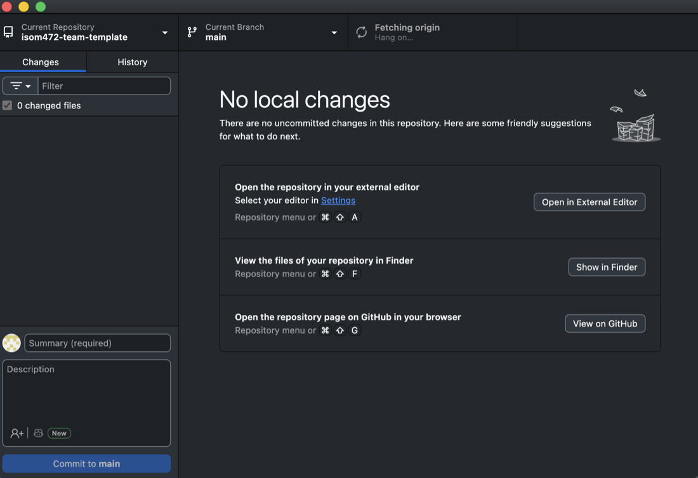
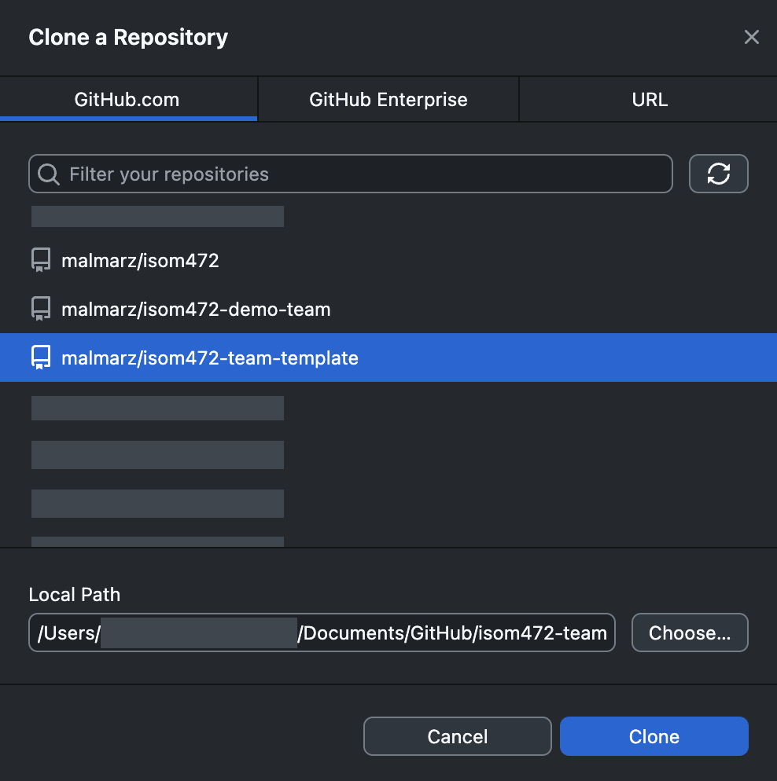
Open the same folder in Antigravity
GitHub Desktop moves the work. Antigravity is where you build it. Both point at the one folder GitHub Desktop just cloned — not a copy of it, and not a second download.
- Open Antigravity.
- Choose File › Open Folder.
- Select the folder GitHub Desktop cloned into, and open it.
You should see the repository's files in Antigravity's file list, with the same names you see in GitHub Desktop. From here on, a file you save in Antigravity appears under Changes in GitHub Desktop within a second or two.
The email your commits carry
Every commit carries a name and an email address, and GitHub matches that email to an account. The email GitHub Desktop commits with must be an email address on your GitHub account. If it is not, github.com shows the commit as plain grey text with no avatar and no link to you, and the work is not attributed to you at all. Check this before your first commit, not after twenty of them.
- Open GitHub Desktop's settings — File › Options on Windows, GitHub Desktop › Settings on macOS, named Preferences in older versions.
- Choose the Git tab.
- Read the Email field. It must be an address listed on your GitHub account. If it is not, replace it with one that is.
- To see which addresses count, open https://github.com/settings/emails while signed in to GitHub.
You should see, after your first push, your avatar and your GitHub username beside the commit on github.com, and your username linking to your profile. Grey text with no avatar means the email does not match — fix the Email field before you commit again.
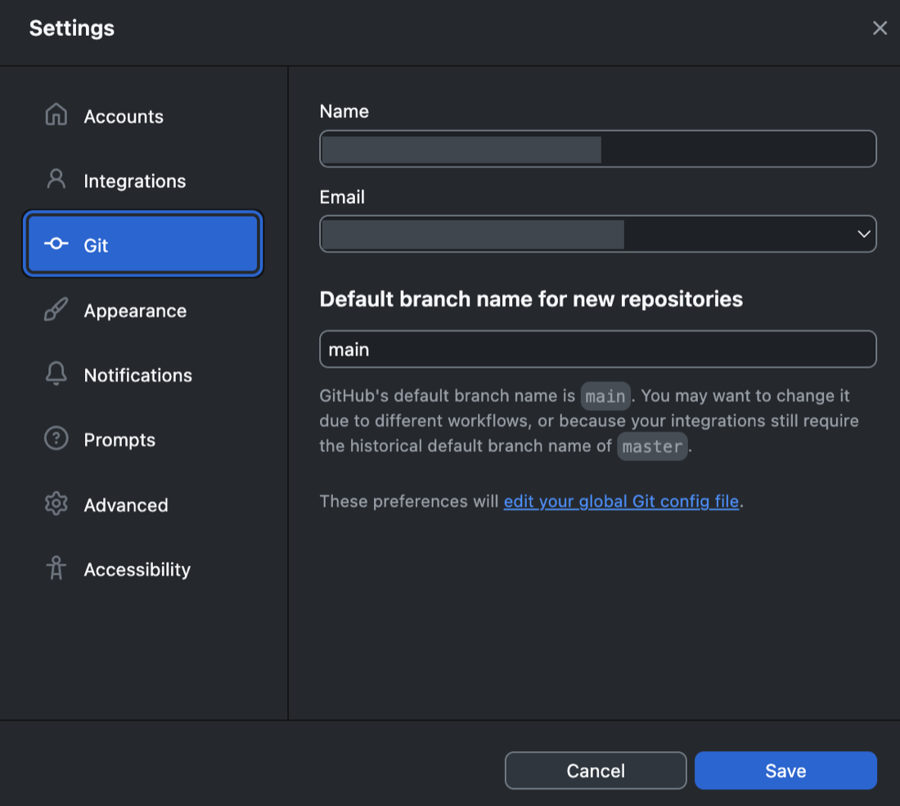
Your commits, your pull requests and your reviews are the record of what you personally did in this course, and they are the only record that exists. An unattributed commit is work nobody can trace to you.
Part 2 — The loop: branch, commit, pull request, review, merge
Every change goes through these nine steps, including the proposal in Phase 1. The rules behind them — one branch per story, what a commit message contains, what a pull request must say, and what a review means — are on the repository page. This page is the buttons.
1. Start a branch
One branch per story. The branch is made from main, so check
what you are branching from before you make it.
- In GitHub Desktop, look at the Current Branch button at the top. It should say main. If it does not, click it and switch to main.
- Click Current Branch, then New Branch.
-
Name it
<story-number>-<short-name>— lower case, hyphens between words, no spaces and no capitals. The story number is the issue number, so story #14 gives14-duplicate-order-check. - Click Create Branch.
You should see the Current Branch button now showing your new branch name instead of main, and the Changes tab empty.
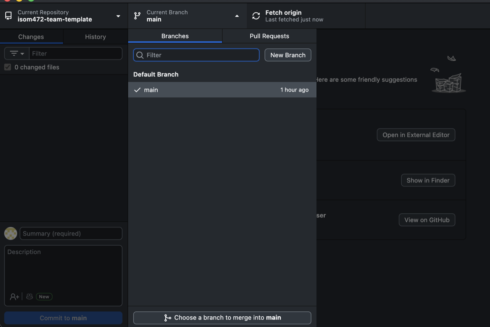
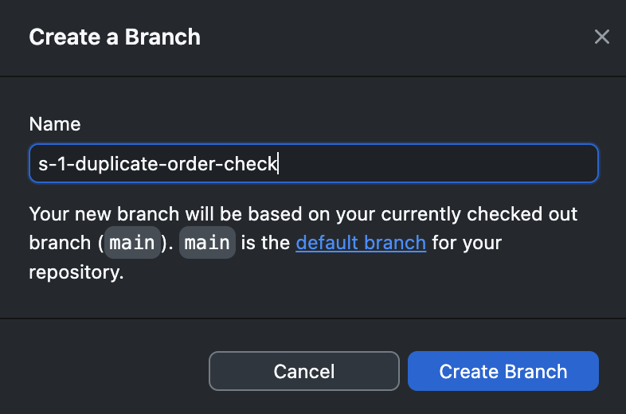
main.2. Make the change
- Work in Antigravity on the folder you opened in Part 1, or open the folder directly — in GitHub Desktop, the Repository menu, then Show in Explorer (Windows) or Show in Finder (macOS).
- Make the change and save it.
You should see the file listed under Changes in GitHub Desktop, checked, with the changed lines shown in the panel on the right. If it is not listed, you edited a copy saved somewhere else — on the Desktop or in Downloads — rather than the file inside the cloned folder.
3. Commit to the branch
-
In the box at the bottom left, write the summary line. It carries a
type, a scope, what changed, and the story number — for example:
docs(proposal): add section 2, what happens today -
Check the commit button underneath. It reads Commit to
followed by a branch name, and that name must be your branch —
not
main. - Click it.
You should see the Changes list empty out, and your commit at the top of the History tab with your avatar beside it.
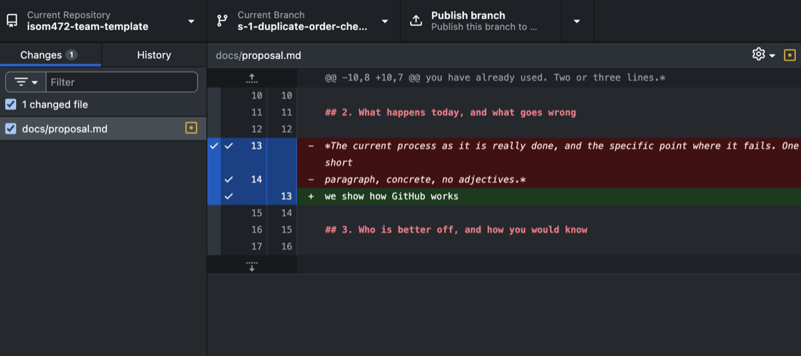
The full rules for a commit message — the types, the scope, and where the story number goes — are on the repository page. Read them before your team's first commit. Commit often, in small pieces, rather than once at the end of the week.
4. Publish the branch
The branch exists only on your laptop until you publish it. Nobody can review what they cannot see.
- Click the button near the top of the GitHub Desktop window. The first time it reads Publish branch; every time after that, on the same branch, it reads Push origin.
You should see the button settle on Fetch origin, and the branch appear in the branch list on github.com.
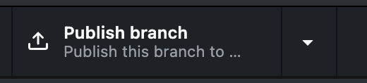
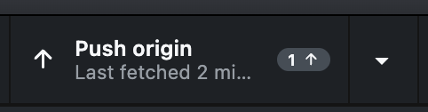
5. Open a pull request
- In GitHub Desktop, click Create Pull Request — it appears after publishing, and is also in the Branch menu. It opens github.com in your browser.
- Write the title in the same form as a commit message, carrying the story number.
- Fill in the body. The repository ships with a pull request template, so the headings are already in the box when it opens — write under each one rather than deleting them.
- Click Create pull request.
The body must say what changed, which story it closes, and how to check
it — what the reviewer opens, what they do, and what they should
see. It must also carry the AI-Assisted: declaration, on
every pull request with no exceptions. The required block, the worked
example and the form of the declaration are on the
repository page.
You should see the pull request open on github.com with its own number, your title, your body under the template's headings, and your branch named as the source.
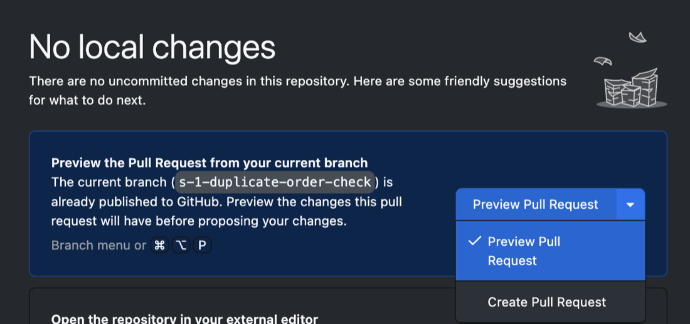
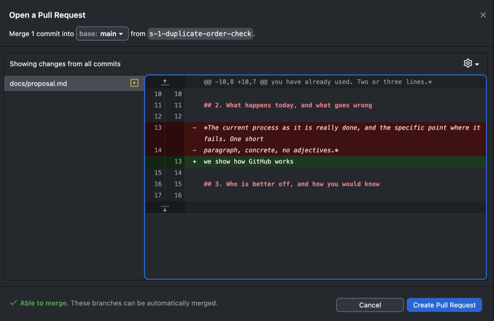
main, that the branch beside it is yours, and that it says it is able to merge.
The screenshots come from two example
repositories — the GitHub Desktop ones from the team
repository template, the github.com ones from a worked example —
so the repository name changes partway down this page while the shape
stays identical. The numbers in them differ from the #14
example used in the text: there the story is #2 and the
merged pull request is #3. The branch names and titles in
the images also carry an s- or S- prefix, from
an earlier version of these instructions; the story number is now used on
its own. You can open the worked example and read the whole loop
for yourself —
one issue, one branch, one pull request, one review, one merge —
on the worked example. The screenshots on this
page were taken in an earlier copy of it, so the numbers differ; the shape does
not.
![The “Open a pull request” form on github.com. The two selectors at the top read base: main and compare: s-2-readme-front-page. The title box has filled itself in from the commit and reads “docs(readme): name the system [S-2]”. The description box below already holds the repository’s pull request template: a heading for what this changes, a heading for the story it closes with “Closes #__” under it, and an AI-Assisted heading, each followed by a grey comment line saying what to write there.](../../assets/img/gh-pr-form.jpg)
Closes #__ with the story issue's number.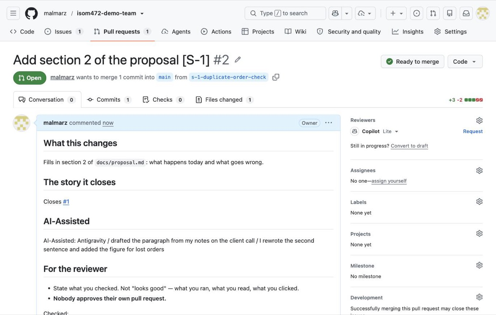
Closes #1, the AI-Assisted: line, and what the reviewer is asked to check.6. Ask a teammate to review
- On the pull request page, find Reviewers on the right.
- Click it and choose one teammate. Not yourself — GitHub will not offer you your own name.
- Tell them, so they know it is waiting.
You should see your teammate's name under Reviewers, and the pull request saying a review is required before it can be merged.
7. The review — done by the teammate, not the author
These steps are for the reviewer, on github.com. The author does not do them.
- Open the pull request and click Files changed.
- Read what changed. Then do what the "how to check it" section says: open it, run it, see what happens.
- Click Submit review, at the top right — older screens call this button Review changes.
- In the box, write what you opened, what you did, what you saw, and what you did not check. The last part matters as much as the rest.
- Choose Approve, then Submit review.
A review that says only "looks good" is not a review. Nothing was opened, nothing was run, and nothing was claimed — and the reviewer's name is on it either way. A worked example of a real review is on the repository page.
You should see the pull request show Approved with the reviewer's name and their written review on the conversation tab.
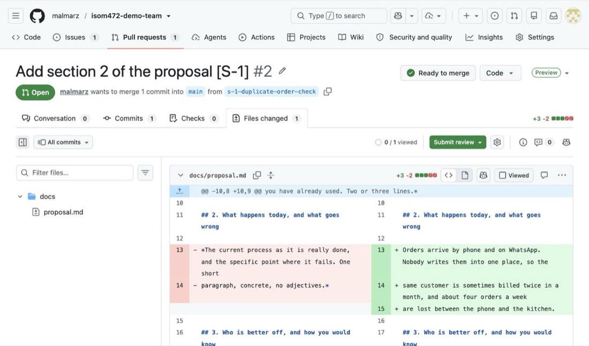
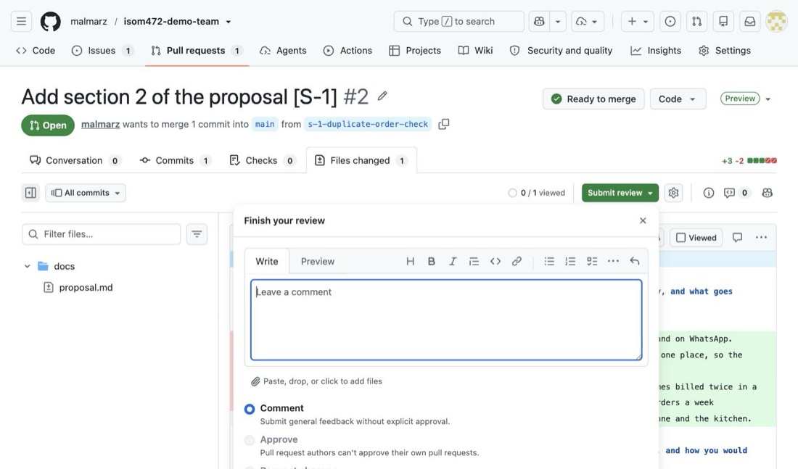
8. Merge — the reviewer merges, never the author
Nobody merges their own pull request. The teammate who reviewed it is the one who merges it. If you wrote it, you are finished at step 6.
GitHub stops you approving your own pull request, but it will let you merge it. The button works. In this course you do neither. Merging your own work is visible in the repository, and it is the thing the rule exists to prevent.
- The reviewer clicks Merge pull request, then Confirm merge.
-
On the screen that follows, the reviewer clicks
Delete branch. The work is on
mainnow; the branch has nothing left to hold.
You should see the pull request marked
Merged, the change present in the repository's files on
main, and the branch gone from the branch list.
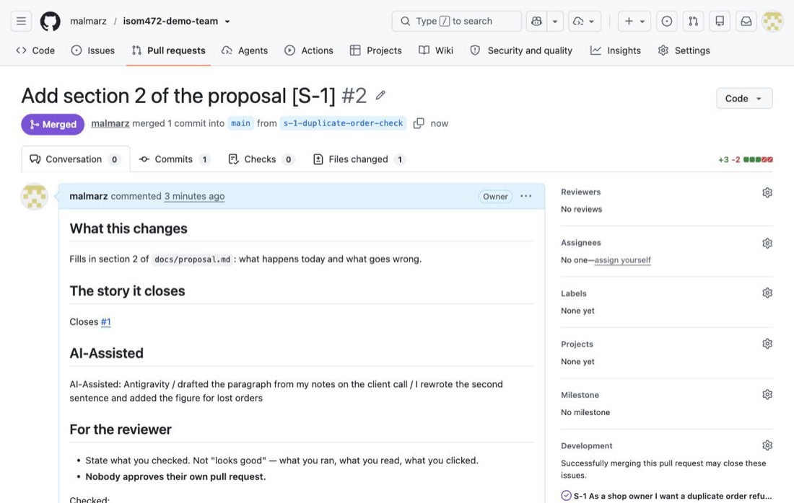
9. Come back to main
Your laptop does not know about the merge until you fetch it. Do this before starting the next story, or you will branch from work that is already out of date.
- In GitHub Desktop, click Current Branch and switch to main.
- Click Fetch origin.
- Click Pull origin when it appears.
You should see the merged work in the History tab while on main, and the Changes list empty. You are ready to start step 1 again for the next story.
When it goes wrong
What actually goes wrong, and what to do:
-
You committed while still on
maininstead of your branch. You can tell because the commit button namedmainrather than a branch name, and because your commit is in the History tab while Current Branch says main. Do not try to unpick it and do not push anything else on top. Tell the instructor what happened and leave it alone until it has been sorted out. -
GitHub refused your push to
main. That is the rule working, not a fault: nothing reachesmainwithout a pull request and a review. Make a branch, push that, and open a pull request. Do not force anything, and if you cannot get your work onto a branch, tell the instructor. - The Create Pull Request button does nothing, or GitHub Desktop asks you to publish first. The branch was never published. Go back to step 4, click Publish branch, then try again.
- You cannot approve your own pull request. That is the rule, not a fault, and GitHub enforces it. Do not open a second account, and do not ask a teammate to approve without reading. Ask someone to actually review it.
- The branch list keeps growing. Merged branches are not being deleted. Whoever merges deletes the branch on the same screen, in the same minute — a list of forty dead branches hides the three that are live.
Part 3 — Giving the proposal a public address
The proposal is delivered twice. docs/proposal.md in the
repository is the document that is judged. The same content, published as
a page from your team's own repository, is delivered a second time
— presented from its live address and checked only as reachable,
not judged on how it looks.
GitHub Pages is already switched on for your team
repository. The instructor sets it up when the repository is
created, publishing from main at the repository root.
There is nothing for the team to configure and no setting to change.
Get your change onto main and the page rebuilds itself
within about a minute — there is no publish button.
The address for the proposal page is
https://isom472-fall2026.github.io/<your-repo>/docs/, where
<your-repo> is your team number — team1,
team2, and so on. The bare repository
address — the one without /docs/ — is not blank:
GitHub builds a page from your repository's README.md
automatically, so that address serves your README rendered as a web page.
Until the team fills the README in, it reads "TODO: the system's name",
and it is public, so fill it in early. That address is also where the
team's running system goes later in the course, which is why the proposal
page sits under /docs/.
Edit docs/index.html on a branch
The file is already in your repository. It has the eight headings in the right
order and a TODO paragraph under each one. Start with step 1 of
Part 2: make a branch. It has no story number, so name it for the work —
proposal-public-page.
Then open docs/index.html and replace every
TODO with your own text. Leave the headings and the small
style block at the top alone. It is not graded on how it looks, and it needs no
stylesheet, no script and no images.
You should see the file open correctly if you double-click it on
your own laptop before committing it — your headings and your text, with no
TODO left anywhere.
Get it onto main through the loop
The page is served from main, and the only way onto
main is the loop in Part 2. The proposal is not an
exception to it.
- Commit the edited file to your branch (step 3).
- Publish the branch (step 4).
-
Open a pull request, with the
AI-Assisted:line filled in like any other (step 5). - Ask a teammate to review it (steps 6 and 7).
- The reviewer merges it and deletes the branch (step 8).
You should see your own text, and no TODO, when you
open docs/index.html on github.com while looking at main
— not only on your branch.
Check the address
- Wait a minute or two after the merge. The build takes time.
-
Open
https://<owner>.github.io/<repo>/docs/in a browser. - Check it again from a phone, off the campus network — on phone data, not KU wifi.
You should see your proposal's content load at that address, from a network with no connection to the university at all. "Reachable" means reachable by anyone.
When it goes wrong
What actually goes wrong, and what to do:
- The address returns a 404 for the first minute or two after the merge. That is normal. Wait, then reload.
-
The file is named something other than
index.html. Rename it — GitHub Pages servesindex.htmlfrom a folder and nothing else.Index.html,index.htmandproposal.htmlall fail. - The work was merged but the page was checked too early. Give it another minute and reload. A hard reload helps if the browser is showing you the 404 it cached a moment ago.
-
The address still shows nothing. The file is on the
branch but was never merged. The page is built from
main, so an open pull request publishes nothing. Check on github.com that the pull request says Merged.
The team repository is public, so anything committed to it can be read by anyone. Never put a password, a key, or a client's private data in it.
"Delivered" means both things: the file in the repository, and the page reachable at its address. One without the other is not delivered.
- The repository — the rules behind this loop
- The project proposal — the required shape
- Deliverables
- Team roles
- Setup guide
Written 12 September 2026. GitHub and GitHub Desktop change their screens and rename their buttons from time to time. If what you see does not match this description, follow the screen in front of you, finish the step, and tell the instructor what changed so this page can be corrected.